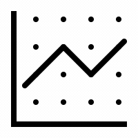

Hosein Kangavar Nazari is a Ph.D. researcher at Technische Universität Dresden. His research interests are Time-sensitive networking, IoT, and Network Coding. His goal is to contribute to future communication systems and the development of more robust
and efficient communications—the network we deserve.
During his master's, Hosein embarked on research to maintain reliable communication in poor channel conditions for network coding-based communications. In addition, He has participated in developing several IoT
systems as a member of the IoT lab at IASBS university. He also worked as a part-time IoT developer at Sarv Tech company developing HVAC systems for large-scale smart buildings.

![]()

Personal: hknstudy[at]gmail.com
Academic : hosein.kangavar_nazari[at]tu-dresden.de
Education

Ph.D. Researcher - Computer Engineering
Technische Universität Dresden (TU Dresden)
Project: Integration of 5G with Time-Sensitive Networking
Supervisor: Prof. Frank Fitzek

M.Sc. - Computer Science
The Institute for Advanced Studies in Basic Sciences
Thesis title: Partial Packet Recovery for Network Coding
Supervisor: Dr. Peyman Pahlevani
GPA: 19.94/20, Rank (1/14)
Selected Graduate Courses: Coding Theory (A++), Advanced Computer Network (A++), Computational Data Mining (A++), Real-time systems (A++), Machine Learning (A++), Advanced Algorithm Design (A+)
B.Sc. - Information Technology Engineering
The Institute for Advanced Studies in Basic Sciences
Thesis title: On the technologies for streaming data through the internet on web-browsers
Supervisor: Dr. Peyman Pahlevani
GPA: 18.76/20, Rank (1/44)
Experience 
Publications
Improving the Decoding Speed of Packet Recovery in Network Coding
Journal: IEEE Communications Letters
Autors: Hosein K. Nazari, K Ghassabi, P Pahlevani, DE Lucani
Open-Source Testbeds for Integrating Time-Sensitive Networking with 5G and beyond
Conference: CCNC 2023 WKSHPS: ROBOCOM 2023, Las Vegas, USA, 2023
Autors: Stefan Senk, Hosein K. Nazari, How-Hang Liu, Giang T. Nguyen, and Frank H. P. Fitzek
TSN-FlexTest: Flexible TSN Measurement Testbed (Extended Version)
2022, (arXiv pre-print)
Autors: Marian Ulbricht, Stefan Senk, Hosein K. Nazari, How-Hang Liu, Martin Reisslein, Giang T. Nguyen, Frank H. P. Fitzek
Fly-PRAC: Partial Packet Recovery Based on Algebraic Consistency of Dependent Packets for Random Linear Coded Transmission
The manuscript has been submitted for review.
Autors: Hosein K. Nazari and Peyman Pahlevani
Teaching Assistant
The Institute for Advanced Studies in Basic Sciences
Distributed Systems (Graduate Course), Instructed by Dr. Peyman Pahlevani, 2020
Coding Theory (Graduate Course), Instructed by Dr. Peyman Pahlevani, 2019-2020
Advanced Computer Networks (Graduate Course), Instructed by Dr. Peyman Pahlevani, 2019-2020
Network Lab, Instructed by Dr. Peyman Pahlevani, 2019
Computer Networks, Instructed by Dr. Peyman Pahlevani, 2018-2019
Operating Systems, Instructed by Dr. Peyman Pahlevani, 2018
Algorithm Design, Instructed by Dr.Mansoor Davoodi Monfared, 2017
Data Structure, Instructed by Dr.Mansoor Davoodi Monfared, 2017
Research Experience
Research Associate at TU Dresden - ComNets group
Member of TICTEEC project
Key responsibilities: Developing TSN translator on 5G Core Network.
Supervisor: Prof. Frank Fitzek
Research Assistant and Software Developer at Sarve Saba Company (2020- 2022)
Topic: Developing energy-efficient IoT systems for online controlling and monitoring of HVAC systems.
Key responsibilities: Developing an IoT system with Node js framework to control actuators, capture and analyze the sensor data, and provide real-time reports.
Supervisor: Dr. Peyman Pahlevani
Wireless Communication Laboratory Research Intern (2018-2021)
Topic: Developing an application for monitoring and controlling the Heating, Ventilation, and Air Conditioning (HVAC) system for reducing electric power usage.
Key responsibilities: Developing a server for monitoring and controlling the HVAC system; designing a web interface/dashboard for graphical data representation and reporting.
Supervisor: Dr. Peyman Pahlevani
IoT Laboratory Research Intern (2015-2018)
Topic: Developing different applications such as a web-based video chat using WebRTC technology for online classrooms.
Key responsibilities: Back-end software developer and Scrum master.
Supervisor: Dr. Peyman Pahlevani and Dr. Reza Parsamehr
Cloud Computing Laboratory Research Intern (2014-2015)
Key responsibilities: Providing a Persian language package for OpenStack cloud software.
Supervisor: Mohammad Ali Farajian
What's more
Ranked 1st and selected as the Exceptionally Talented Student in the undergraduate program, 2018
IT representer of IASBS at research week firm in Zanjan, Fall 2018.
University representer at 5th exhibition of ELECOMP fair, Fall 2017
IT representer of IASBS at research week firm in Zanjan, Fall 2016
Winning the 2nd place in FinTech startups competition, Science and Technology Park, Zanjan, Winter 2016
A member of IASBS IoT team, final round team in “IoT Cup,” at Iran University of Science and Technology, Tehran, Summer 2015
Lecturer in IASBS CPU architecture seminar, Spring 2015
Lecturer in IASBS cloud computing seminar, Winter 2014
Technical Skills
Programming Language
Simulator
Familiar With:
Intrest

Soft Skills

Language Skills
Good Memoriesüòäüòá